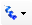
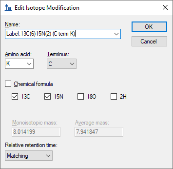
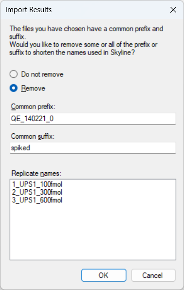
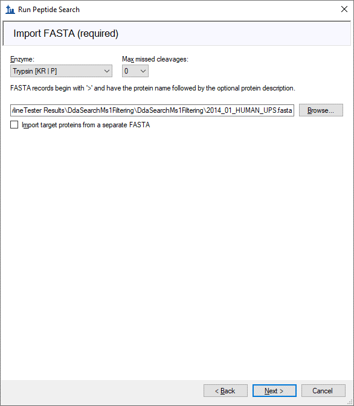
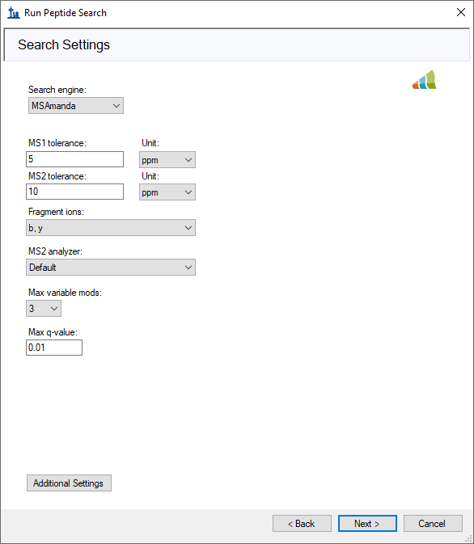
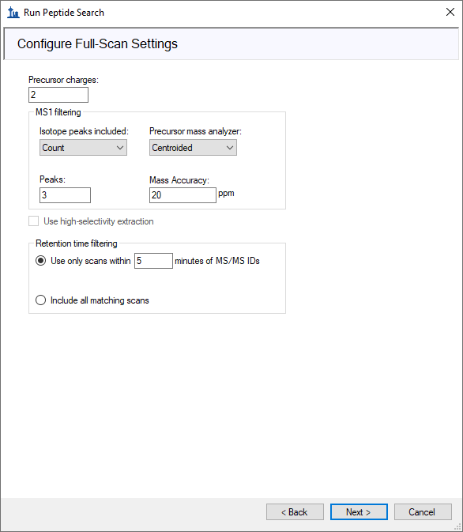
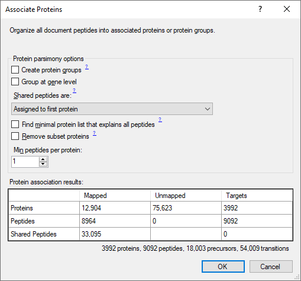
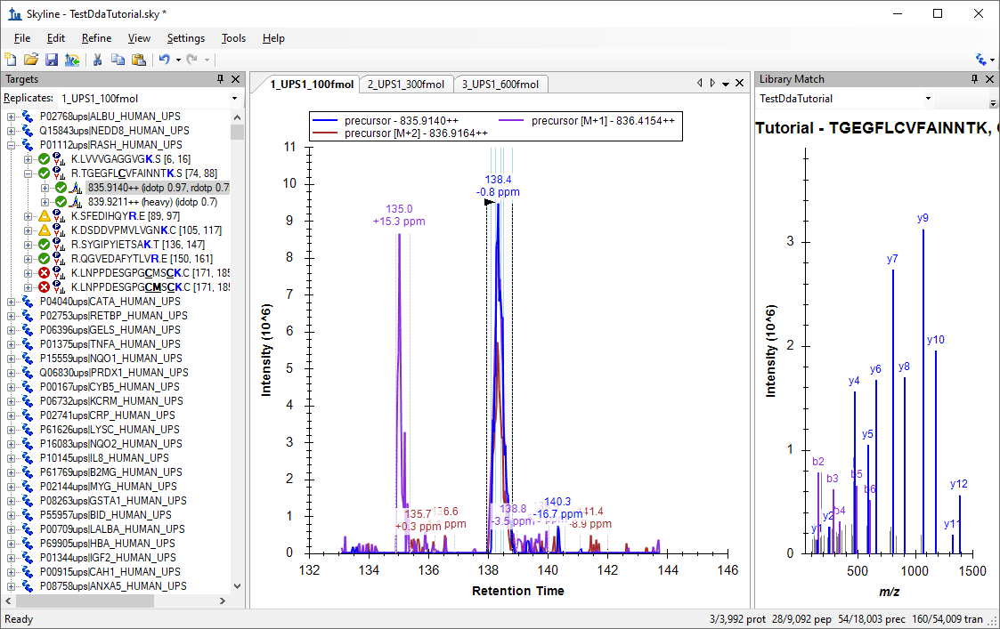
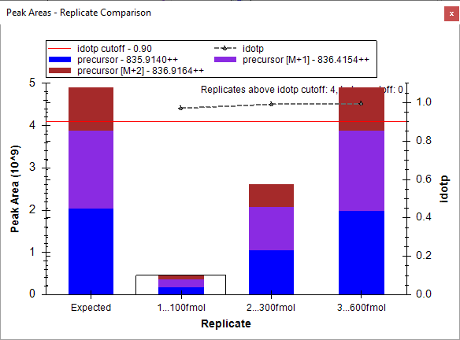
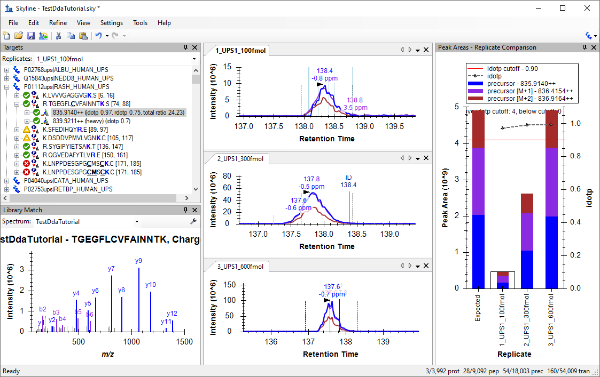

The Skyline Targeted Mass Spectrometry Environment provides informative visual displays of the raw mass spectrometer data you import into your Skyline documents. These displays allow you to manipulate the data by performing tasks such as refining the peptides and transitions you are measuring, and tuning integration boundaries. Originally developed to analyze quantitative assays from selected reaction monitoring (SRM – also referred to as multiple reaction monitoring or MRM) mass spectrometry, Skyline has been expanded to extract time-intensity chromatograms from MS1 spectra for use in peptide quantification experiments involving mass spec runs with data dependent MS/MS.
The Skyline MS1 Full-Scan Filtering supports importing data sets from discovery-type proteomics experiments where mass spectrometers were operated in data dependent acquisition (DDA) mode. After importing the raw data, new and previously existing Skyline features facilitate quantifying peptide precursor MS1 signal across many replicate acquisitions. This mode may also be used for visualizing and better understanding quantitative outputs from other “Label Free” quantitative tools, because of the exceptional data visualization plots in Skyline.
This tutorial will cover the following areas critical to making effective use of Skyline MS1 Filtering when you want Skyline to perform peptide spectrum matching for the MS/MS spectra in your DDA data:
Skyline aims to provide a vendor-neutral platform for targeted mass spectrometry investigation. It can import raw data for MS1 filtering from the instrument vendors Agilent, Bruker, SCIEX, Shimadzu, Thermo-Scientific and Waters, making the expertise you gain here transferrable to any mass spectrometry lab with an instrument from one of these vendors.
To start this tutorial, download the following ZIP file:
https://skyline.ms/tutorials/DdaSearchMs1Filtering.zip
Extract the files in it to a folder on your computer, like:
C:\Users\brendanx\Documents
This will create a new folder:
C:\Users\brendanx\Documents\DdaSearchMS1Filtering
If you have been using Skyline prior to starting this tutorial, it is a good idea to revert Skyline to its default settings. To do so:
The document settings in this instance of Skyline have now been reset to the default.
Since this tutorial covers a proteomics topic, you can choose the proteomics interface by doing the following:

Skyline is operating in proteomics mode which is displayed by the protein icon  in the upper right-hand corner of the Skyline window.
You could start editing this blank document in a number of ways, but for this tutorial you will use a sequential set of forms called a wizard that will walk you through the steps of searching mass spectrometer data dependent acquisition (DDA) data files, setting up targets, and importing chromatograms from those files.
Before starting the DDA search, you need to change the internal standard Skyline uses by default:
The Peptide Settings form should now look like:

You can use the Run Peptide Search wizard to run a peptide search on the MS/MS spectra in DDA data files.
First, do the following to save your new document:
Now, initiate the Run Peptide Search wizard as follows:
Skyline should present a form that looks like this:

This form can be used to search for peptides in raw data (e.g. RAW, WIFF, *.d, mzML, mz5, mzXML). The mz5 files for this tutorial are centroided to make them faster to download than the original profile Thermo RAW files produced by the mass spectrometer.
Add the included DDA mz5 files to the search by doing the following:
The wizard form should now look like this:

A form should appear asking you how to handle the prefix shared by the three mz5 files:

The wizard will advance to the Add Modifications page, where it lists all of the amino acid modifications in the document that you might want to include in the DDA search. It is important to distinguish here between fixed and variable modifications: fixed (sometimes called static) modifications are always applied to the specified amino acids. For example, Carbamidomethyl C is usually treated as a fixed modification because all cysteines in the data are expected to be alkylated. Oxidation M is almost always treated as a variable modification because oxidation is hit-or-miss depending on sample handling. Skyline’s search always treats isotopic labels as variable, but you can change whether other modifications are treated as fixed or variable by clicking the Edit modifications button.
You can also add modifications to the document from this page. Since the document was reset to defaults, the list starts with only Carbamidomethyl (C):

These data are SILAC labelled, so you will need to add heavy label modifications here. To add them, do the following:
The Edit Isotope Modification form should now look like this:

Add a second isotope modification by doing the following:
The 13C and 15N checkboxes are checked automatically to tell Skyline to use 13C for all carbon atoms and 15N for all nitrogen atoms present in an Arginine molecule, for a total mass shift of 10 Daltons (6x 13C + 4x 15N).
The Edit Isotope Modification form should now look like this:

Skyline automatically calculates both the monoisotopic and average masses, approximately 8 Daltons for Lysine (K) and 10 Daltons for Arginine (R) that will result from using 13C and 15N in these amino acid residues. To finish adding the heavy modifications:
Now you will add Oxidation (M) as a structural modification:
At this point the Add Modifications page should look like:

The wizard will advance to the Configure Full-Scan Settings page.
The other fields on this page should default to values you can use for this tutorial, and the wizard should look like this:

This should bring you to the Import FASTA page in the wizard. For this tutorial you will use a human protein FASTA with the sequences from Sigma-Aldrich’s Universal Proteomics Standard (UPS) prepended at the top (so that Skyline uses those accession numbers for any peptides that are shared between UPS and non-UPS proteins). To select the FASTA:
The wizard should now look like this:

The wizard will advance to the Adjust Search Settings page. Here you can set the most important parameters for the DDA search. For this tutorial, do the following:
The form should now look like this:

The Max q-value field sets a false discovery rate (FDR) limit allowed for the peptide matches in the search results. In this tutorial, you will use a 1% FDR (maximum q value of 0.01), which is the default and the most common limit used in the field of proteomics.
The DDA Search page will show you the progress of the search. You may also cancel the search by clicking the Cancel Search button on this page.

After the search is finished:
Skyline will start to build a spectral library from the search results. After the library build is completed, a message box will pop up to warn you that there were some spectra that could be interpreted as multiple different peptides with equal confidence, and that those peptides will be ignored:

Skyline will then start to import the library into your document. When that is finished it will ask you to set criteria for including proteins in the document:

Skyline can merge proteins that match the same set of peptides into protein groups and find a minimal list of proteins that explain all the peptides. You can read more about protein grouping and parsimonious protein inference in this documentation page: Skyline Protein Association. For this tutorial, leave the checkboxes for creating protein groups and finding a minimal list of proteins unchecked.
After the proteins are imported into the document, you will see the main Skyline window with the UPS proteins at the top of the Targets view. You should see 5,219 proteins there (counted in the status bar). Skyline will also begin extracting chromatograms with progress displayed in an Importing Results form. You can wait several minutes for chromatogram extraction to complete or you can continue with all but the last step below during the import.
Your Skyline window should look something like this:

The document is now fully configured for MS1 Filtering with three DDA runs imported. You will see that the chromatogram in this view is approximately 10 minutes in length (133 to 143 minutes), due to the Use only scans within [5] minutes of MS/MS IDs setting chosen in the import wizard. Note that when the Skyline document is set up for MS1 Filtering, in the place where you would see product ion transitions (e.g. y-ions) for triple quadrupole SRM experiments, you will now see the different precursor isotope peaks, such as for peptide TGEGFLCVFAINNTK: precursor – 835.914++, precursor [M+1] - 836.4154++, and precursor [M+2] – 836.9164++.
To configure a few other features that will be helpful in general, especially to visualize certain MS1 Filtering data, perform the following steps:
This tells Skyline to treat all chromatograms in a peak group (here precursor ions M, M+1 and M+2) as integrating together, regardless of whether peaks appear to be co-eluting with the largest peak. It no longer impacts the integrated peak areas as it once did.
A window with a graph like this should appear:

You can dock the Peak Areas window to your desired location by doing the following:
Now your Skyline window should look something like this:

From this point you can learn more about working with DDA data by consulting the MS1 Full Scan Filtering tutorial.